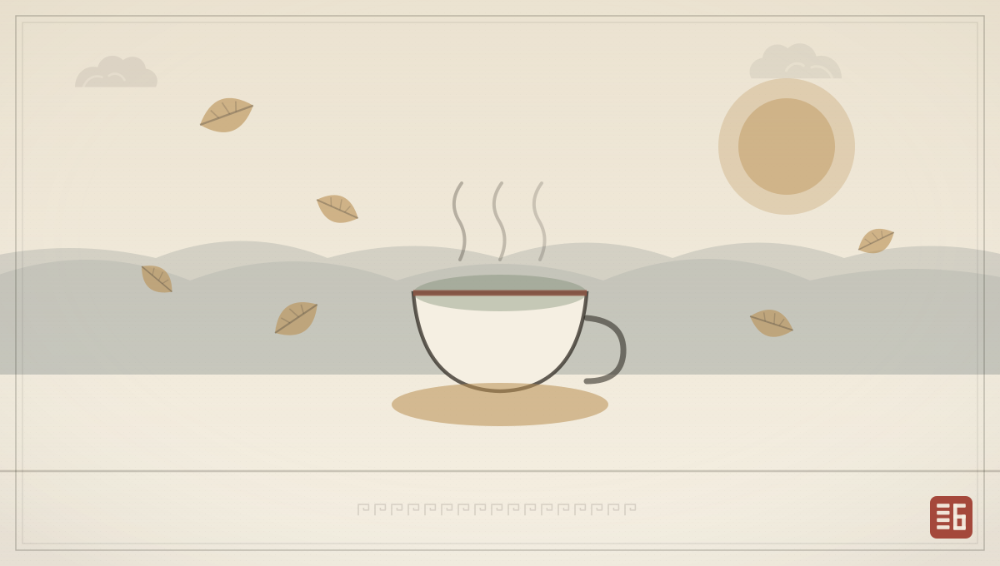
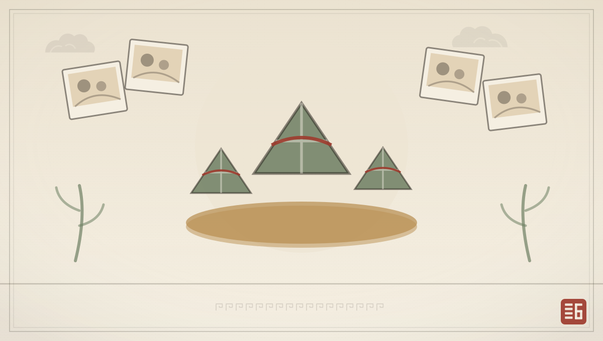
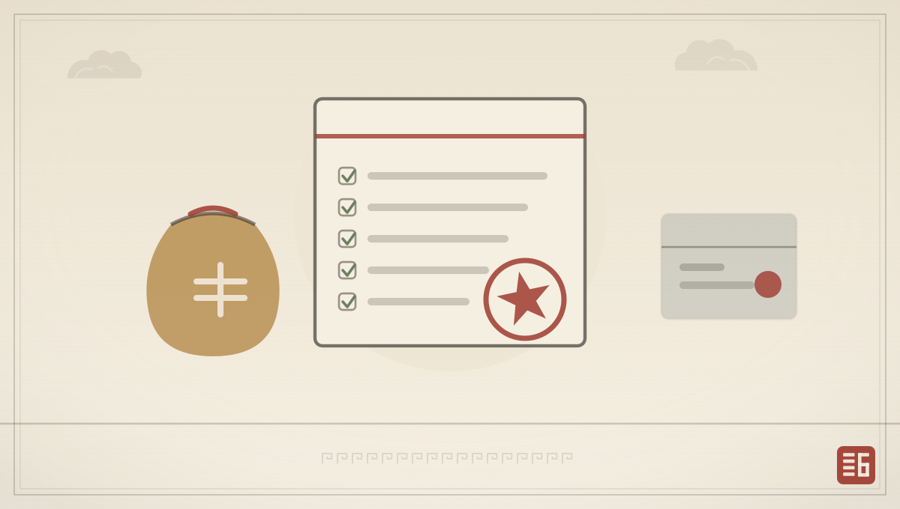

首页›养老资讯
养老资讯
政策、健康与机构动态
我们把养老里重要的事，用长辈和家属都看得懂的话讲清楚。

长期护理保险试点扩围，失能长者居家照护有新支撑
越来越多城市将重度失能人员纳入长护险，居家照护也能报销部分费用，减轻家庭长期负担。
阅读全文
换季护养：入秋后长者起居饮食三处微调
昼夜温差变大，长者的血压、睡眠与肠胃都需要顺应时节。三处小调整，安稳过秋。
阅读全文
颐和“银龄学堂”开课，书法与智能手机课受热捧
每周两节的兴趣课堂，让长者在写字、拍照与视频通话里，重新和外界连上线。
阅读全文
端午邻里宴：三代同堂包粽，老照片里的旧时光
家属与长者围坐包粽、话家常，一张张老照片被重新翻开，记忆在粽香里被接住。
阅读全文
预防跌倒：给父母家做这十处改造
过半长者跌倒发生在家里。从防滑、照明到扶手，十处小改动能大幅降低风险。
阅读全文
养老服务补贴申领指南：条件、材料与办理渠道
高龄、失能长者家庭可申领的补贴有哪些？我们整理了一份可直接照着办的清单。
阅读全文有想了解的话题？
留言告诉我们，下一期资讯就写你关心的内容。